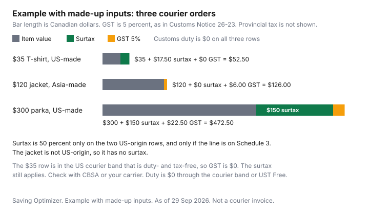

Clothing · Canada
Ordering Clothes From US Sites After Canada's September 2026 Counter-Tariffs: Duty, Tax and the $40/$150 Rules
Since 8 September 2026, clothing marked as a good of the United States can owe Canada’s surtax (the apparel lines here are on the 50 percent schedule) on top of normal duty and tax. The $40 and $150 courier bands do not exempt the surtax, and Asia-made clothing shipped from a U.S. warehouse is not subject to it. A US checkout can show a low clothing price and still be the expensive way to buy. Since 8 September 2026, certain goods that originate in the United States can owe a surtax of 15, 25 or 50 percent of the value for duty, on top of ordinary duty and tax rules. This page is the apparel version of that bill. Household goods that are not clothes stay on the household counter-tariffs guide. Nothing here is a ruling. Confirm a shipment with the CBSA Border Information Service at 1-800-461-9999, or with your carrier, before you treat a checkout total as the landed cost.
Key takeaways
- The United States Surtax Order (2026), SOR/2026-186, was made 4 September 2026 and came into force 8 September 2026. The Justice Laws consolidation is current to 2026-09-21 and last amended on 2026-09-08.
- The surtax is 15, 25 or 50 percent of the value for duty, by schedule. The apparel lines in the table below are on the 50 percent schedule. The list covers specific tariff lines, not all clothing. Footwear, swimwear and ski suits were not on it.
- For a personal import, US origin means the goods are marked as a good of the United States, even if they ship from another country. Asia-made clothing shipped from a US warehouse is not subject to the surtax. Ordinary duty and tax can still apply.
- Mail is duty- and tax-free at $20 and under. Courier from the US or Mexico is duty- and tax-free up to $40, duty-free but taxed above $40 to $150, and duty and tax above $150. Those bands do not exempt the surtax.
- How a courier or Canada Post collects the surtax on a small order, whether a brokerage or handling fee is added, and how that appears at checkout or at the door, is not confirmed here; check with CBSA or your carrier. Check with CBSA or your carrier, and read the carrier's fee page.
What changed on 8 September 2026 and which apparel lines are on the 50% list
Customs Notice 26-23, dated 7 September 2026, says that from 8 September 2026 certain goods imported into Canada and originating in the United States are subject to a surtax of 15, 25 or 50 percent of the value for duty, depending on the schedule. The Order is SOR/2026-186, registration 2026-09-04, P.C. 2026-785.
On the Justice Laws site as of 29 Sep 2026, the consolidation says it is current to 2026-09-21 and last amended on 2026-09-08. The CBSA customs-notice list, as of the same date, still titles Customs Notice 26-23 as the United States Surtax Order (2026) notice. Customs Notice 26-24, updated 2026-09-14, is about a Partners in Protection exemption for some air carriers in the courier low-value program. Customs Notice 26-22, revised 2026-09-16, is a United Kingdom tariff-consolidation note. Neither title amends the clothing lines below. The Department of Finance product list, issued 25 August 2026, prints the same apparel codes with a 50 beside them, and its own page says the list may no longer reflect current measures. Use the Order as the list.
Apparel on that 50 percent schedule is a set of tariff items, not a category called "clothing." Schedule 3 of the Order, read 29 Sep 2026, includes the knitted and woven lines in the table. It does not include Chapter 64 footwear, swimwear under 6211.11 or 6211.12, or ski suits under 6211.20. No apparel line from chapters 61 or 62 appeared on the 15 percent or 25 percent schedules in that read. Which line a parcel actually takes depends on classification: check with CBSA. A cotton T-shirt is not automatically 6109.10.00 because the website calls it a T-shirt.
| Tariff item | What the line covers | 50% surtax if US origin | MFN rate |
|---|---|---|---|
| 6104.43.00 | Women's or girls' dresses, knitted, of synthetic fibres | Yes | 18% |
| 6104.63.00 | Women's or girls' trousers, overalls, breeches and shorts, knitted, of synthetic fibres | Yes | 18% |
| 6109.10.00 | T-shirts, singlets and other vests, knitted, of cotton | Yes | 18% |
| 6110.20.00 | Jerseys, pullovers, cardigans and similar, knitted, of cotton | Yes | 18% |
| 6110.30.00 | The same articles, knitted, of man-made fibres | Yes | 18% |
| 6116.93.00 | Gloves, mittens and mitts, knitted, of synthetic fibres | Yes | 18% |
| 6201.40.10 and 6201.40.90 | Men's or boys' overcoats, car-coats, anoraks (including ski-jackets), wind-cheaters and similar, of man-made fibres | Yes | 18% on .10; 17% on .90 |
| 6202.40.00 | The same outerwear for women or girls, of man-made fibres | Yes | 18% |
| 6203.11.00, 6203.31.00, 6203.41.00 | Men's or boys' suits, jackets and blazers, and trousers, of wool or fine animal hair | Yes | 18% |
| 6204.43.00 and 6204.49.00 | Women's or girls' dresses, woven, of synthetic fibres, and of other textile materials | Yes | 18% on 6204.43.00; 16% on 6204.49.00 |
| 6210.20, 6210.40, 6210.50 | Garments made up of felted, nonwoven, coated or laminated fabrics. The .10 lines are protective suits for a noxious atmosphere; the .90 lines are the other garments of that type. | Yes, both the .10 and .90 statistical suffixes on the Order | .10 lines Free; .90 lines 18% |
| 6211.32.00, 6211.33.00, 6211.43.10 and 6211.43.90 | Other garments, men's or boys' of cotton or man-made fibres, and women's or girls' of man-made fibres. 6211.43.10 is saris. | Yes | 17% on 6211.32.00; 18% on 6211.33.00 and 6211.43.90; 6% on 6211.43.10 |
| Not on the Order | Chapter 64 footwear; swimwear 6211.11 and 6211.12; ski suits 6211.20 | No. The list covers specific tariff lines, not all clothing. | Ordinary duty can still apply. 6211.11.00 and 6211.20.00 print 18% MFN, and UST Free, on the 2026 tariff. |
Under the US tariff treatment, those apparel lines print as Free. That is why a US-made item on the list typically pays the surtax and no regular duty, while a non-US-made item shipped from the United States pays no surtax and may pay most-favoured-nation duty once it is above the courier threshold. Whether a specific item qualifies for that US tariff treatment is a question for CBSA. Customs Notice 26-23, Example 2, is the CBSA's own arithmetic, not one of our examples: value for duty $150, most-favoured-nation duty 0 percent, surtax 50 percent, so surtax $75, value for tax $225, GST $11.25, and surtax plus GST $86.25.
Mail vs courier: the $20, $40 and $150 low-value thresholds explained
The low-value bands are Canadian dollars of value for duty. The CBSA low-value shipment page, modified 2025-11-25 and current as of 29 Sep 2026, and Memorandum D8-2-16, Ottawa, 15 November 2024, say the same thing in slightly different words.
By mail, $20 and under is duty- and tax-free from any country. Above $20, duties and taxes apply, including from the United States and Mexico. By courier from the United States or Mexico, up to $40 is duty- and tax-free, above $40 to $150 is duty-free but taxes apply, and above $150 duties and taxes apply. By courier from any other country, up to $20 is duty- and tax-free and above $20 duties and taxes apply. A courier, on that page, is a commercial carrier in scheduled international transport of goods other than mail.
The higher courier band does not require the goods to originate in a CUSMA country. They must be shipped from the United States or Mexico, and they must have entered that country's commerce first. Goods only transshipped through the United States do not get the higher band. Memorandum D8-2-16, paragraph 12, also says goods manufactured in the United States and shipped from another country other than Mexico take the lower threshold. Paragraph 8 says you cannot split one order into several packages to duck under the line. Paragraph 9 says that once the value for duty exceeds the threshold, duty applies to the entire value, not only the amount over the line. Some goods are outside the remission entirely, including alcohol, cannabis, tobacco and certain publications. The $40 and $150 figures are not surtax exemptions. Customs Notice 26-23, paragraph 9, says the surtax applies to US-origin goods including those eligible for remission of customs duties and sales or excise taxes under the postal or courier remission orders, and that surtax applies on shipments under the de minimis thresholds. Paragraph 29 says such goods must be accounted for. Paragraph 17 says GST is calculated on the value for tax, which includes the surtax even when customs duties are remitted, and that GST is not payable on non-taxable importations even if the importation is subject to the surtax.
| How it arrives | Value for duty | Ordinary duty | Ordinary tax | Surtax, if the goods originate in the US and the line is listed |
|---|---|---|---|---|
| Mail, any country | $20 and under | No | No | Still applies |
| Mail, any country | Above $20 | Yes | Yes | Applies |
| Courier from the US or Mexico | Up to $40 | No | No | Still applies |
| Courier from the US or Mexico | Above $40 to $150 | No | Yes | Applies. GST in the notice includes the surtax even when duty is remitted. |
| Courier from the US or Mexico | Above $150 | Yes, on the whole value | Yes | Applies |
| Courier from any other country | Up to $20 | No | No | Still applies if the goods are US-origin |
| Courier from any other country | Above $20 | Yes | Yes | Applies if the goods are US-origin |
Made in vs shipped from: why origin decides the surtax, not the checkout currency
A price in US dollars, a ".com" address, and a warehouse in New Jersey are not the test. Customs Notice 26-23, paragraphs 5 and 6, says the surtax applies only to goods that originate in the United States, meaning goods eligible to be marked as goods of the United States, and that it can apply even when the goods are exported from a country other than the United States.
For personal importations, paragraphs 14 and 15 say the goods count as US-origin when they are marked as a good of the United States, including when they are imported from another country and marked as made in, produced in, or originating in the United States. Goods made elsewhere are not subject to the surtax. An Asia-made jacket that ships from a US warehouse is the usual case: no surtax, and the ordinary mail or courier rules still apply. Goods marked as originating in Puerto Rico, Guam, the Northern Mariana Islands, American Samoa or the US Virgin Islands are excluded.
Read the origin mark on the garment or the product page before you compare a Canadian shelf price. If the page does not state where it was made, you do not yet know whether the 50 percent line can apply. Currency conversion is a separate cost. It is not origin. A cash-back portal, if you use one, tracks a purchase. It does not reduce value for duty.
Brokerage fees, 'duties paid' checkouts and how to see the landed cost first
Write the landed cost down before you pay the store. Start with value for duty, which is not always the number on the screen once shipping and the seller's discounts are in the price.
Then ask three questions. Do the goods originate in the United States, in the marking sense above? Is the tariff line one of the lines in the table, which is a classification question for CBSA if you are unsure? Which band applies: mail, courier from the United States or Mexico after the goods entered that country's commerce, or courier from somewhere else, including a transshipment that never entered US commerce?
A "duties paid" or "taxes included" badge is the retailer's sentence, not a CBSA assessment. Read the checkout lines. If the badge does not say whether surtax is inside it, do not assume the 50 percent is prepaid. This guide does not cover how any carrier bills the surtax, whether a brokerage or handling fee is added, or how that fee shows up at checkout or at the door. Check with CBSA at 1-800-461-9999 or your carrier, and open the carrier's fee page before you accept the shipment. Do not use a dollar figure from a forum as a brokerage rate. Travellers who bring goods home in personal baggage are a different set of rules. Customs Notice 26-23, paragraph 23, points to CBSA's Guide for residents returning to Canada. Use that guide. The cross-border trip guide is the household version of the drive, not a duty calculator for a coat in a suitcase.
Worked examples: a $35 top, a $120 jacket and a $300 coat
Example with made-up inputs. The three values for duty are $35, $120 and $300 so the arithmetic is visible.
They are not shelf prices, averages, or quotes. Provincial sales tax is left out. GST is 5 percent, the rate in Customs Notice 26-23's examples, applied to value for duty plus surtax plus customs duty. The $35 row sits in the courier band that is duty- and tax-free, so its GST is $0: paragraph 17 of the notice says GST is not payable on a non-taxable importation even if surtax applies. The surtax on that row still applies. The chart is the paragraph 17 method, not a prediction of the slip at the door. Check with CBSA or your carrier.
| Example with made-up inputs | Origin and line used | Value for duty | Surtax | Customs duty | GST at 5% |
|---|---|---|---|---|---|
| Cotton T-shirt, courier from the US | US-made, treated as 6109.10.00 | $35.00 | $17.50 | $0.00. At $40 or under, the courier remission covers ordinary duty, and the line's UST rate is Free. | $0.00. At $40 or under from the US, the courier band is duty- and tax-free, and Customs Notice 26-23, paragraph 17, says GST is not payable on a non-taxable importation even if surtax applies. Check with CBSA. |
| Jacket, courier from a US warehouse | Asia-made, not US-origin. The bar assumes the goods entered US commerce, so the higher courier band applies. | $120.00 | $0.00 | $0.00. Above $40 to $150 from the US is duty-free and tax applies. If the jacket was only transshipped, the $20 band applies instead and most-favoured-nation duty can apply to the whole $120. Check with CBSA. | $6.00 |
| Synthetic parka, courier from the US | US-made, treated as 6202.40.00 | $300.00 | $150.00 | $0.00 if UST applies. Above $150, duty applies to the whole value when a duty rate applies. If this parka does not qualify for UST, the MFN rate on 6202.40.00 is 18 percent, which is $54. Check with CBSA. | $22.50 on $450 if duty is $0. If duty were $54, value for tax would be $504 and GST would be $25.20. |

When to buy in Canada instead and how to return a cross-border order
Compare the Canadian price with the landed stack, not with the US sticker. On a listed US-made line the surtax alone is half the value for duty before GST.
A coat that looks cheaper on a US site can lose that gap once $150 of surtax is in the comparison, as in the made-up $300 row. This page does not say Canadian retailers absorb the surtax, and it does not give the surtax an end date. Neither point is in the sources cited here. If you buy in Canada, use the price-adjustment guide for what a later sale does to a receipt you already hold, and the return-policy guide before you assume a change-of-mind right. A winter coat's fit and timing are on the coat guide.
A store refund is not automatically a refund of surtax or duty. Customs Notice 26-23 says an adjustment for casual goods uses Form B2G and cannot be sent through CARM, and it points to Memorandum D6-2-6. That is the notice's instruction, not a promise about timing. Check with CBSA before you count on getting the border charges back because the retailer accepted the return. Read the seller's return window, who pays return postage, and whether "final sale" survives the border, before you order.
Sources
- Justice Laws, United States Surtax Order (2026), SOR/2026-186, Full Text, as of 29 Sep 2026. Made 4 September 2026, P.C. 2026-785. In force 8 September 2026. Consolidation current to 2026-09-21, last amended on 2026-09-08. Apparel lines cited above are on Schedule 3. They were not on Schedules 1 or 2. Chapter 64, 6211.11, 6211.12 and 6211.20 were not on the schedules.
- CBSA, Customs Notice 26-23, United States Surtax Order (2026), Ottawa, 7 September 2026, as of 29 Sep 2026. Paragraphs 4 to 6, 9, 14, 15, 17, 23 and 29, and Example 2 ($150, 50 percent, GST $11.25, total of surtax and GST $86.25). Border Information Service 1-800-461-9999.
- CBSA customs notice list, as of 29 Sep 2026. Customs Notice 26-23 is the surtax notice. Customs Notice 26-24, updated 2026-09-14, is a Partners in Protection courier exemption. Customs Notice 26-22, revised 2026-09-16, is a United Kingdom tariff note.
- Department of Finance Canada, list of products from the United States subject to counter-tariffs effective 8 September 2026, issued 25 August 2026, as of 29 Sep 2026. The page says the list may no longer reflect current measures. 6109.10.00 and 6202.40.00 appear with 50 beside them. The Order is the list used here.
- CBSA, low-value shipment thresholds page, dcterms.modified 2025-11-25, as of 29 Sep 2026. Mail $20. Courier from the US or Mexico: up to $40, above $40 to $150, above $150.
- CBSA Memorandum D8-2-16, Courier Imports Remission, Ottawa, 15 November 2024, as of 29 Sep 2026. Paragraphs 3, 4, 8, 9 and 10 to 13.
- CBSA, 2026 Customs Tariff, chapters 61 and 62, as of 29 Sep 2026. MFN and UST rates in the table.
Frequently asked questions
Do Canada's counter-tariffs apply to clothes I order from a US website?
They apply when the clothes originate in the United States and the tariff item is on the United States Surtax Order (2026). For a personal import, Customs Notice 26-23 says that means the goods are marked as a good of the United States, even if they ship from another country. A US website and a US-dollar price do not decide it. Asia-made clothing is not subject to the surtax, though ordinary duty and tax can still apply. The apparel lines that are covered are specific, mostly at 50 percent of the value for duty, and classification is something to check with CBSA.
Does the surtax apply to small orders under $40 or $150?
Yes. Customs Notice 26-23, paragraph 9, says the surtax applies to US-origin goods including shipments that fall under the de minimis thresholds, even when ordinary duty or tax may be remitted. The courier bands still matter for that ordinary duty and tax: up to $40 from the US or Mexico is duty- and tax-free, and above $40 to $150 is duty-free but taxed. Those bands are not a surtax exemption. How a courier collects the surtax on a small personal order is a question for CBSA or your carrier.
Is 'made in' or 'shipped from' what matters?
For the surtax, origin matters. Personal imports count as US-origin when they are marked as a good of the United States. Shipping from a US warehouse does not create that origin if the clothes were made elsewhere. Shipping from outside the United States does not erase it if they are marked as US goods. The courier threshold is a separate test: the higher $40 and $150 bands need the goods to be shipped from the United States or Mexico after they entered that country's commerce. Goods only transshipped through the United States stay at the $20 band.
Which clothing items are on the 50% list?
Schedule 3 includes specific lines, including cotton T-shirts and cotton or man-made knitted pullovers, certain synthetic dresses and trousers, synthetic knitted gloves, man-made-fibre overcoats, some wool suits and trousers, and some coated or laminated garments. The descriptions and MFN rates are in the table. Footwear, swimwear and ski suits were not on the Order. The list covers specific tariff lines, not all clothing. Whether your parcel is one of those lines depends on classification: check with CBSA.
How do I avoid surprise charges when my package arrives?
Price the landed cost before you pay the store: origin mark, likely tariff line, mail versus courier, and whether the goods entered US commerce or were only transshipped. Read a duties-paid badge line by line and do not assume it includes the surtax. Open the carrier's fee page rather than guessing a brokerage amount. This page does not state how couriers bill the surtax. Check with CBSA at 1-800-461-9999 or your carrier, and read the seller's return rules before you order.
Researched and drafted with AI assistance and fact-checked against official Canadian sources. How we create content.
Disclosure: Cash-back portal offers are an offer type. Saving Optimizer may earn a commission if a partner link is added later. No portal partnership is claimed. A portal does not change value for duty, surtax, or GST. Education only. This is not customs, tax, or legal advice.